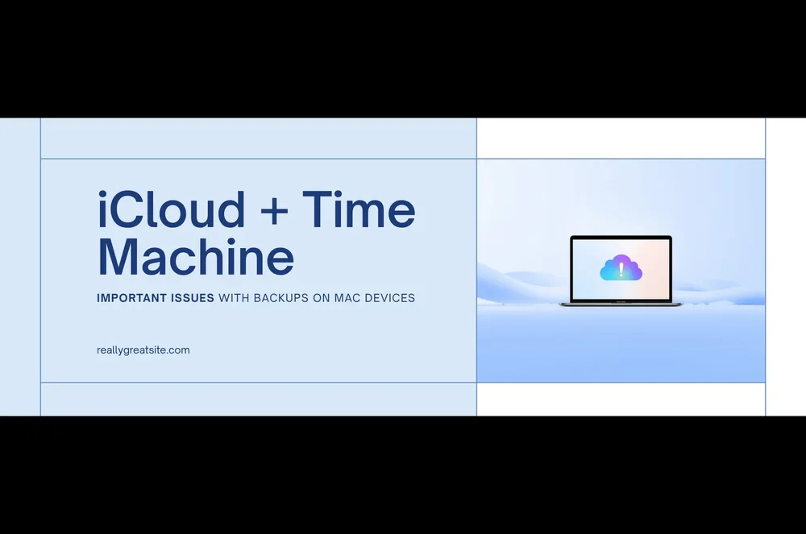

【要注意】iCloud Driveを使っているとTime Machineが正しくバックアップされない！

Macユーザーの多くが利用しているiCloud DriveとTime Machine。「iCloudにも保存されているし、Time Machineでもバックアップしているから安心！」そう思っていませんか？
実は、この2つを同時に使うと、思わぬ落とし穴にはまる可能性があります。今回は実際に経験したトラブルをもとに、同じ失敗をしないための情報をお伝えします。
😱 何が起きたのか
iCloudアカウントからログアウトした瞬間、デスクトップと書類フォルダのファイルが全部消えてしまいました。
「Time Machineでバックアップしているから大丈夫！」と思って復元を試みると…
フォルダはある。でも中身が空っぽ。
🔍 調べてみたら…原因が判明!!
iCloud Driveの「デスクトップと書類フォルダ」同期の仕組み
iCloudの設定で「デスクトップと書類フォルダ」をiCloudと同期する設定にすると、ファイルの実体はiCloudのサーバー（クラウド）上に保存されます。
Macのデスクトップや書類フォルダに見えているファイルは、実はクラウドへのショートカット（エイリアス）のような状態になっています。
Time Machineはクラウドの中身までバックアップできない
Time MachineはあくまでMacのローカルディスクにあるデータをバックアップします。ファイルの実体がクラウドにある場合、空のフォルダ（エイリアス）だけをバックアップしてしまい、中のファイルはバックアップされません。
📊 図で整理すると
| 状態 | ファイルの実体 | Time Machineのバックアップ |
|---|---|---|
| iCloud同期オン | iCloudサーバー上 | 空のフォルダだけ ⚠️ |
| iCloud同期オフ | Macのローカルディスク | フォルダも中身も完全に ✅ |
✅ 解決策・予防策
① iCloudの「デスクトップと書類フォルダ」同期をオフにする
システム設定 → Apple ID → iCloud → iCloud Drive
→「デスクトップと書類フォルダ」のトグルをオフ
これでファイルの実体がMacに保存され、Time Machineが正しくバックアップできるようになります。
② 大切なファイルは2重バックアップをする
- Time Machine（外付けSSD・HDD）で自動バックアップ
- 手動で別の外付けドライブにコピーする習慣をつける
クラウドだけ、Time Machineだけに頼らず、2重・3重のバックアップが安心です。
③ iCloudを使いたい場合はプランを見直す
無料プランは5GBのみ。デスクトップや書類フォルダを同期するには容量が全く足りません。iCloud Driveを活用したい場合は有料プランへのアップグレードを検討してください。
- 50GB：月額130円
- 200GB：月額400円
- 2TB：月額1,300円
📝 まとめ
| 状況 | Time Machineのバックアップ |
|---|---|
| iCloud同期オン | フォルダのみ（中身なし）⚠️ |
| iCloud同期オフ | フォルダも中身も完全に ✅ |
「iCloudでもバックアップしているから安心」は危険な思い込みです。特にiCloudの無料プラン（5GB）を使っている方は要注意！
大切なデータを守るために、今すぐバックアップの設定を見直してみてください。